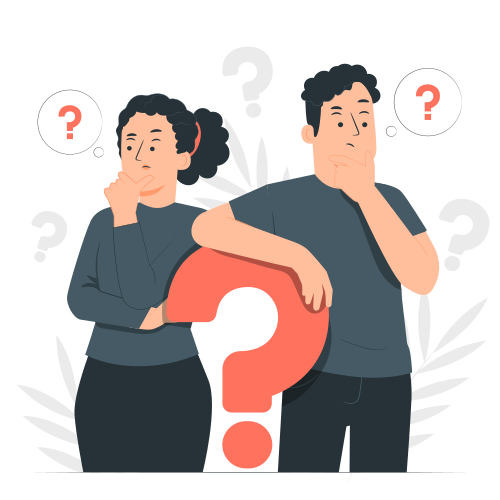

GC Fiturs
Buat Pengalaman laporan Anda Lebih Cepat
Beberapa Fitur yang ada untuk membantu aspirasi anda sampai SKPDAspirasi
Masyarakat dapat Menyampaikan Aspirasi dengan aman dan terjaga kerahasiaannya
Pengaduan

Ada Sebuah Penemuan?, bingung pengen lapor kemana?
Tenang
GC tersedia fitur pengaduan untuk masyarakat Kota Tasikmalaya
Permintaan Informasi
Memiliki Kebutuhan Akan Data, GC bisa menyediakan informasi tersebut dengan lengkap dan terpercaya